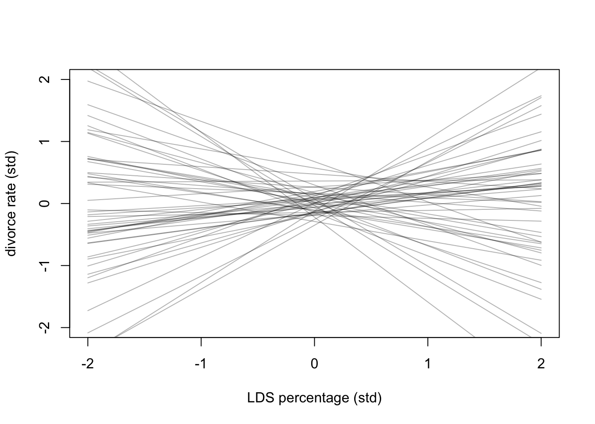
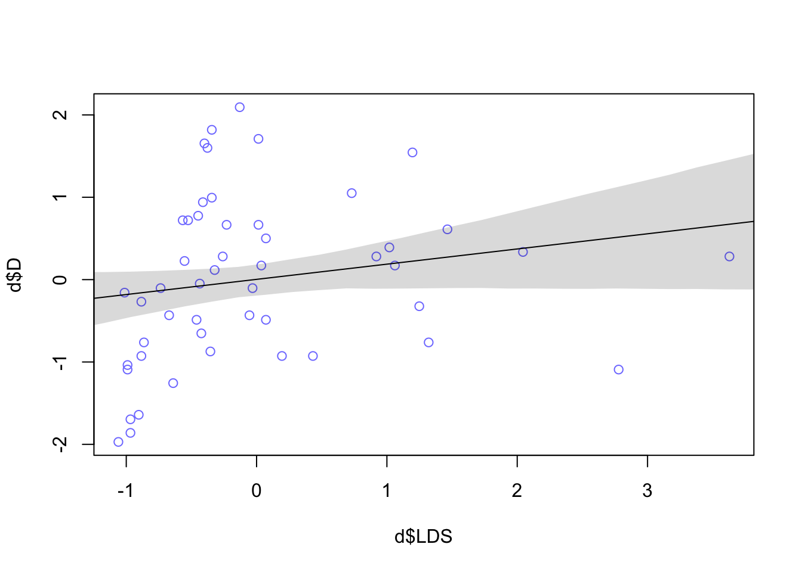

# load data and copy
library(rethinking)
data("WaffleDivorce")
d <- WaffleDivorceSR_Ch05_practice
Chapter 5 Practice
5E1. Which of the linear models below are multiple linear regressions?
(2) \(µ_{i} = \beta_{x}x_{i} + \beta_{z}z_{i}\)
(4) \(µ_{i} = \alpha + \beta_x x_i + \beta_zz_i\)
ImportantWrong answer
(3) \(µ_{i} = \alpha + \beta(x_{i} - z_{i})\) - It does make use of two variables, but has one slope parameter. governing both. The coefficient on \(x_i\) and \(z_i\) is constrained to be equal in magnitude — you cannot estimate their effects independently.
What makes a model MLR?
- Two or more independent predictors, each with its own free coefficient
5E2. Write down a multiple regression to evaluate the claim: Animal diversity is linearly related to latitude, but only after controlling for plant diversity. You just need to write down the model definition.
A → P → L
\[D_i = \alpha + \beta_PP_i + \beta_LL \]
5E3. Write down a multiple regression to evaluate the claim: Neither amount of funding nor size of laboratory is by itself a good predictor of time to PhD degree; but together these variables are both positively associated with time to degree. Write down the model definition and indicate which side of zero each slope parameter should be on.
F → T ← L
\[T_i = \alpha + \beta_{F}F_i + \beta_LL_i\]
- This looks to be a masked relationship. Funding may be positively associated with T, time to degree; while size of lab, L, may be negatively associated with time to degree. Funding should be positively associated with size of lab (more funds coming in means a higher capacity to hire more lab members).
5E4. Suppose you have a single categorical predictor with 4 levels (unique values), labeled A, B, C and D. Let Ai be an indicator variable that is 1 where case i is in category A. Also suppose Bi, Ci, and Di for the other categories. Now which of the following linear models are inferentially equivalent ways to include the categorical variable in a regression? Models are inferentially equivalent when it’s possible to compute one posterior distribution from the posterior distribution of another model.
(1) \(µ_i = \alpha + \beta_AA_i + \beta_BB_i + \beta_DD_i\)
(2) \(µ_i = \alpha + \beta_AA_i + \beta_BB_i + \beta_CC_i + \beta_DD_i\)
(3) \(µ_i = \alpha + \beta_AA_i + \beta_CC_i + \beta_DD_i\)
(4) \(µ_i = \alpha_AA_i + \alpha_BB_i + \alpha_CC_i + \alpha_DD_i\)
(5) \(µ_i = \alpha_A(1 - B_i - C_i - D_i) + \alpha_BB_i + \alpha_CC_i + \alpha_DD_i\)
Models (1) and (3) use the indicator method within model, just using different categories as reference variable (the one that’s left out of the model): so C in the case of (1) and B in the case of (2). All four means are recoverable using this method.
Models (4) and (5) are using the index method, both are algebraically identical. $A_i = (1- B_i - C_i - D_i )$
Model (2) does not work because it’s over-parameterized (5 free parameters trying to describe 4 means).
Medium
5M1. Invent your own example of a spurious correlation. An outcome variable should be correlated with both predictor variables. But when both predictors are entered in the same model, the correlation between the outcome and one of the predictors should mostly vanish (or at least be greatly reduced).
5M2. Invent your own example of a masked relationship. An outcome variable should be correlated with both predictor variables, but in opposite directions. And the two predictor variables should be correlated with one another.
5M3. It is sometimes observed that the best predictor of fire risk is the presence of firefighters— States and localities with many firefighters also have more fires. Presumably firefighters do not cause fires. Nevertheless, this is not a spurious correlation. Instead fires cause firefighters. Consider the same reversal of causal inference in the context of the divorce and marriage data. How might a high divorce rate cause a higher marriage rate? Can you think of a way to evaluate this relationship, using multiple regression?
Divorced people will tend to marry again, perhaps marry multiple times - so driving up the divorce rates drives up the marriage rates.
5M4. In the divorce data, States with high numbers of Mormons (members of The Church of Jesus Christ of Latter-day Saints, LDS) have much lower divorce rates than the regression models expected. Find a list of LDS population by State and use those numbers as a predictor variable, predicting divorce rate using marriage rate, median age at marriage, and percent LDS population (possibly standardized). You may want to consider transformations of the raw percent LDS variable.d
d$LDS <- c(0.0077, 0.0453, 0.0610, 0.0104, 0.0194, 0.0270, 0.0044, 0.0057, 0.0041, 0.0075, 0.0082, 0.0520, 0.2623, 0.0045, 0.0067, 0.0090, 0.0130, 0.0079, 0.0064, 0.0082, 0.0072, 0.0040, 0.0045, 0.0059, 0.0073, 0.0116, 0.0480, 0.0130, 0.0065, 0.0037, 0.0333, 0.0041, 0.0084, 0.0149, 0.0053, 0.0122, 0.0372, 0.0040, 0.0039, 0.0081, 0.0122, 0.0076, 0.0125, 0.6739, 0.0074, 0.0113, 0.0390, 0.0093, 0.0046, 0.1161)#standardize vars
d$D <- standardize(d$Divorce)
d$M <- standardize(d$Marriage)
d$A <- standardize(d$MedianAgeMarriage)
d$LDS <- standardize(log(d$LDS))Bivariate Model for LDS percentage and Divorce Rates
dat <- list(
D = d$D,
LDS = d$LDS
)
m5.LDS <- quap(
alist(
D ~ dnorm(mu, sigma),
mu <- a + bL * LDS,
a ~ dnorm(0,0.2),
bL ~ dnorm(0,0.5),
sigma ~ dexp(1)
), data=dat
)
precis(m5.LDS) mean sd 5.5% 94.5%
a -6.310874e-07 0.11243380 -0.17969155 0.1796903
bL 1.838266e-01 0.13245057 -0.02785502 0.3955082
sigma 9.613125e-01 0.09479154 0.80981735 1.1128077- Should bL be negative? Hmm
# limits of standardized values for x-axis
xseq <- c(-2,2)
# Simulate priors
prior <- extract.prior(m5.LDS)
mu <- link(m5.LDS, post = prior, data = list(LDS = c(-2, 2)))
# plot lines over the range of 2 standard deviations for both outcome, predictor
plot(NULL, xlim=c(-2,2), ylim=c(-2,2), xlab="LDS percentage (std)", ylab="divorce rate (std)")
for (i in 1:50) lines(xseq, mu[i,], col=col.alpha("black",0.3))
range(d$LDS) # around -1 to 3.5[1] -1.060412 3.628444LDS_seq <- seq(-2, 4, length.out = 30)
mu <- link(m5.LDS, data=list(LDS=LDS_seq))
mu_mean <- apply(mu, 2, mean)
mu_PI <- apply(mu, 2, PI)
plot(d$D ~ d$LDS, col=rangi2)
lines(LDS_seq, mu_mean)
shade(mu_PI, LDS_seq)
m5M4 <- quap(
alist(
D ~ dnorm(mu, sigma),
mu <- a + bA*A + bM*M + bL * LDS,
a ~ dnorm(0,0.2),
bA ~ dnorm(0,0.5),
bM ~ dnorm(0, 0.5),
bL ~ dnorm(0,0.5),
sigma ~ dexp(1)
), data= d
)
precis(m5M4) mean sd 5.5% 94.5%
a -3.332750e-06 0.09389847 -0.1500712 0.15006456
bA -6.995883e-01 0.15140021 -0.9415551 -0.45762151
bM 7.281948e-02 0.16220361 -0.1864132 0.33205218
bL -2.908881e-01 0.14931339 -0.5295197 -0.05225646
sigma 7.519934e-01 0.07471508 0.6325843 0.871402555M5. One way to reason through multiple causation hypotheses is to imagine detailed mechanisms through which predictor variables may influence outcomes. For example, it is sometimes argued that the price of gasoline (predictor variable) is positively associated with lower obesity rates (outcome variable). However, there are at least two important mechanisms by which the price of gas could reduce obesity. First, it could lead to less driving and therefore more exercise. Second, it could lead to less driving, which leads to less eating out, which leads to less consumption of huge restaurant meals. Can you outline one or more multiple regressions that address these two mechanisms? Assume you can have any predictor data you need.
Average monthly miles driven by household
Walkability score of city
Weekly visits to restaurants by household